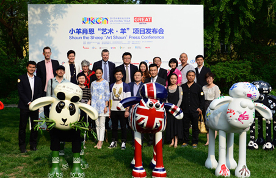

<!DOCTYPE html PUBLIC "-//W3C//DTD XHTML 1.0 Transitional//EN" "http://www.w3.org/TR/xhtml1/DTD/xhtml1-transitional.dtd">
<html xmlns="http://www.w3.org/1999/xhtml">
<head>
<meta http-equiv="Content-Type" content="text/html; charset=utf-8" />
<meta http-equiv="x-ua-compatible" content="ie=7" />
<title>版权交易平台--中关村国家自主创新示范区国家新媒体产业基地管理委员会</title>
<link rel="stylesheet" type="text/css" href="css/style.css"/>
<script type="text/javascript" src="js/jquery-1.4.2.min.js"></script>
<script type="text/javascript" src="js/myfocus-2.0.4.min.js"></script>
<script type="text/javascript" src="js/jquery.slide.js"></script>
<script type="text/javascript" src="js/loopedslider.min.js"></script>
<script type="text/javascript">
//设置
myFocus.set({
	id:'myFocus',//ID
	pattern:'mF_games_tb'//风格
});

$(function (){
	
	/* 用按钮控制图片左右滚动 */
	$(".hotPic .JQ-slide").Slide({
		effect:"scroolLoop",
		autoPlay:false,
		speed:"normal",
		timer:3000,
		steps:1
	});
	$(".hotPic2 .JQ-slide2").Slide({
		effect:"scroolLoop",
		autoPlay:false,
		speed:"normal",
		timer:3000,
		steps:1
	});
	
	
	
});
</script>
</head>

<body>
<div class="language"> <a href="#"></a> <a href="#"></a> <a href="#"></a> </div>
<div class="head2"></div>
<div class="menu">
  <ul>
    <li><a href="index.html">网站首页</a></li>
    <li><a href="newscenter.html">新闻中心</a></li>
    <li><a href="overview.html">园区概况</a></li>
    <li><a href="public.html">政务公开</a></li>
    <li><a href="server.html">企业服务</a></li>
    <li class="current"><a href="copyright.html">版权交易</a></li>
  </ul>
</div>
<div class="clear"></div>
<div class="content">
  <div class="container">
    <div class="position">
      <div class="fl" style="margin:-6px 0 0 0;">
        <iframe allowtransparency="true" frameborder="0" width="180" height="32" scrolling="no" src="http://tianqi.2345.com/plugin/widget/index.htm?s=3&z=2&t=0&v=0&d=3&bd=0&k=&f=&q=1&e=1&a=1&c=54843&w=180&h=36&align=left"></iframe>
      </div>
      <div class="fl">
                <script type="text/javascript">
                    var weekDayLabels = new Array("星期日", "星期一", "星期二", "星期三", "星期四", "星期五", "星期六");
                    var now = new Date();
                    var year = now.getFullYear();
                    var month = now.getMonth() + 1;
                    var day = now.getDate();
                    var currentime = year + "年" + month + "月" + day + "日 " + weekDayLabels[now.getDay()];
                    document.write(currentime);
                </script> 
      </div>
      <div class="second-search">
        <input name="" type="text" class="input" />
        <input name="" type="button" class="second-search-btn" />
      </div>
    </div>
    
    <div class="copyright-news">
      <div class="hot-img"><a href="#"></a></div>
      <div class="hot-text">
        <h2>艺术跨界公益 小羊肖恩艺术羊亮相中英交流年</h2>
        <p>
        英国剑桥公爵（HRH The Duke of Cambridge）在其首次中国行之首站，为"小羊肖恩"雕塑点睛，启动了2015中英文化交流年英国文化季，此点睛仪式触及五亿受众，形成了极大的影响力。仪式选定的雕塑为中英文化交流年英国文化季的特色项目——"小羊肖恩"项目的一款艺术展品。"小羊肖恩"项目包含小羊
        </p>
      </div>
      <div class="hot-box index-list">
          <ul>
            <li><a href="#">5月15日BTV新闻频道都市晚高峰探访国高峰探访国高峰探访国</a>[2015-11-25]</li>
            <li><a href="#">5月15日BTV新闻频道都市晚高峰探访国高峰探访国高峰探访国</a>[2015-11-25]</li>
            <li><a href="#">5月15日BTV新闻频道都市晚高峰探访国高峰探访国高峰探访国</a>[2015-11-25]</li>
          </ul>
      </div>
      <div class="hot-box index-list">
          <ul>
            <li><a href="#">5月15日BTV新闻频道都市晚高峰探访国高峰探访国高峰探访国</a>[2015-11-25]</li>
            <li><a href="#">5月15日BTV新闻频道都市晚高峰探访国高峰探访国高峰探访国</a>[2015-11-25]</li>
            <li><a href="#">5月15日BTV新闻频道都市晚高峰探访国高峰探访国高峰探访国</a>[2015-11-25]</li>
          </ul>
      </div>
    </div>
    <div class="copyright-right">
    <div class="bqjy-login">
      <h4>通知公告</h4>
      <p>
      关于交易系统恢复正常交易的通知<br />

尊敬的交易会员：<br />
交易系统将于2015年6月8日恢复正常交易。由此带来的不便，敬请谅解！
特此通知！<br />
<b>剧本交易平台</b>
      </p>
    </div>
    <div class="bqjy-login">
      <div class="Iwant">
        <a href="#" class="write">我要创作</a>
        <a href="#" class="check">我要校对</a>
      </div>
      <div class="user">
        <input name="" type="text" />
      </div>
      <div class="password">
        <input name="" type="text" />
      </div>
      <input name="" type="button" class="login-btn"/>
      <div class="zc">忘记密码  <a href="#">注册</a></div>
    </div>
    </div>
    <div class="zhuanti"></div>
    
    
    <!--友情链接-->
    <div class="weblink">
      <div class="weblink-title">部分网站</div>
      <p> <a href="#">党政办</a> <a href="#">纪检监察科</a> <a href="#">组宣科</a> <a href="#">内审科</a> <a href="#">土地规划科</a> <a href="#">综治办</a> <a href="#">安监科</a> <a href="#">人力资源部</a> <a href="#">企业服务部</a> <a href="#">项目科</a> <a href="#">招商部</a> <a href="#">开发部</a> <a href="#">工程部</a> <a href="#">预算部</a> <a href="#">经营管理部</a><a href="#">财务部</a> <a href="#">工会</a> <a href="#">团委</a> <a href="#">财政所</a> <a href="#">城管分队</a> <a href="#">统计所</a> </p>
      <div class="weblink-title">相关网站</div>
      <p> <a href="#">区政府办公室 </a> <a href="#">发改委 </a> <a href="#">教委科委 </a> <a href="#">经信委 </a> <a href="#">金融办 </a> <a href="#"> 民委 </a> <a href="#"> 监察局 </a> <a href="#">民政局 </a> <a href="#">司法局 </a> <a href="#">财政局 </a> <a href="#">人力社保局 </a> <a href="#"> 环保局 </a> <a href="#"> 住建委 </a> <a href="#"> 市政市容委 </a> <a href="#"> 交通局 </a> <a href="#" > 农委 </a> <a href="#" > 水务局 </a> <a href="#" > 商务委 </a> <a href="#" > 旅游委 </a> <a href="#" > 文委 </a> <a href="#" > 卫生局 </a> <a href="#" > 人口计生委 </a> <a href="#" > 审计局 </a> <a href="#" > 外事办 </a> <a href="#" > 国资委 </a> <a href="#" > 安监局 </a> <a href="#" > 体育局 </a> <a href="#" > 统计局 </a> <a href="#" >园林绿化局</a> <a href="#" >民防局</a> <a href="#" >法制办</a> <a href="#" > 信访办</a> <a href="#" >老龄委</a> <a href="#" >城管局</a> <a href="#" >行政服务中心</a> <a href="#" >动物卫生监管局</a> <a href="#" >社会办</a> <a href="#" >北京电子商务中心区</a> <a href="#" >新区就业直通车网站</a> <a href="#" >中国西瓜交易网</a> <a href="#" >大兴区工业产品供求信息共享平台</a> <a href="#" >瀛海精神家园网站</a> <a href="#" >大兴区供暖管理中心</a> <a href="#" >北京大兴西瓜节官方网站</a> <a href="#" >大兴区职工服务中心</a> <a href="#" >南海子公园</a> <a href="#" >大兴区学雷锋志愿者服务队</a> <a href="#" >北京京南物流基地</a> <a href="#" >大兴区节水型社会建设网 </a> <a href="#" >大兴区妇女儿童活动中心</a> <a href="#" >大兴区防火安全委员会</a> <a href="#" >大兴社区卫生大兴区献血网</a> <a href="#" >大兴区交通安全信息网</a> <a href="#" >礼贤民族敬老院</a> </p>
    </div>
  </div>
</div>
<div class="footlink"> <a href="#">设为首页</a>| <a href="#">加入收藏</a>| <a href="#">意见反馈</a>| <a href="#">网站地图</a>| <a href="#">网站数据统计</a> </div>
<div class="footer"> 大兴新媒体产业园区管理委员会  版权所有 - 京ICP备00005555号<br />
  大兴新媒体产业园区计算机信息中心  管理维护  webmaster@dxmedia.gov.cn<br />
  推荐使用1600*900分辨率，并使用IE6.0或以上版本浏览器 </div>
  
  <div class="fudong">
  <h2>智慧园区</h2>
  <p></p>
  轻松一扫<br />
关注微信
<div class="close">
   X关闭
</div>
</body>
</html>
